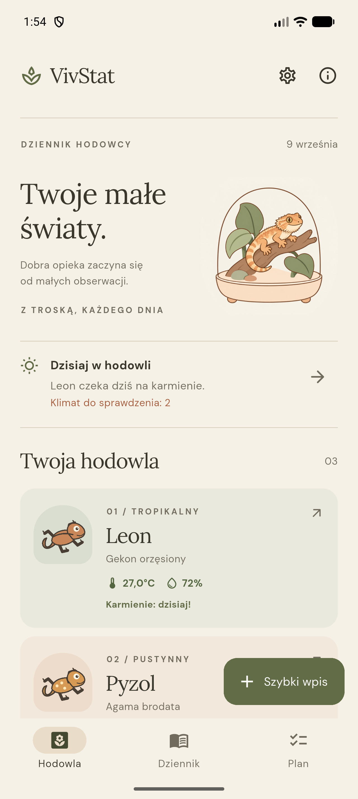
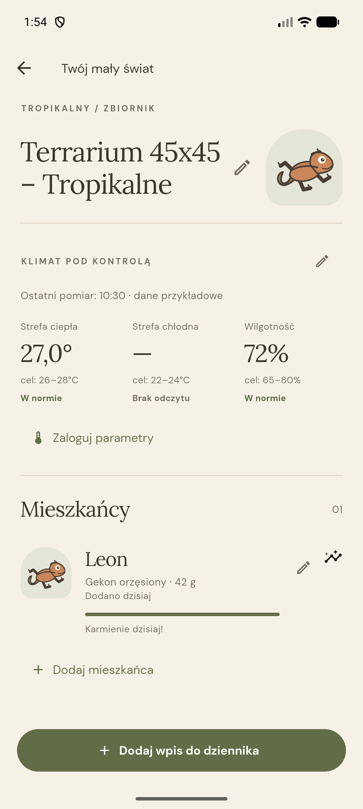
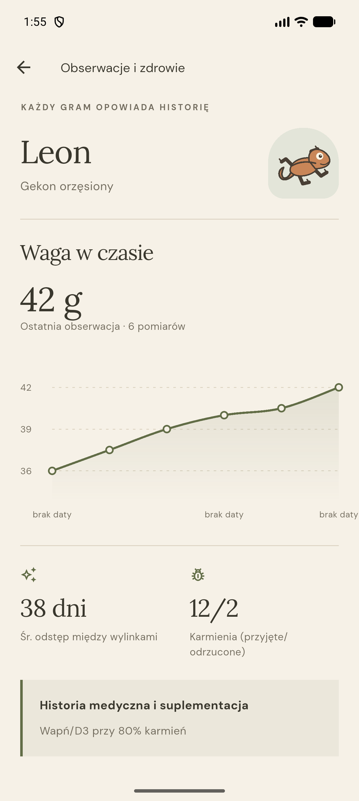
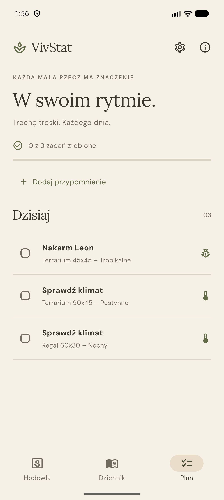
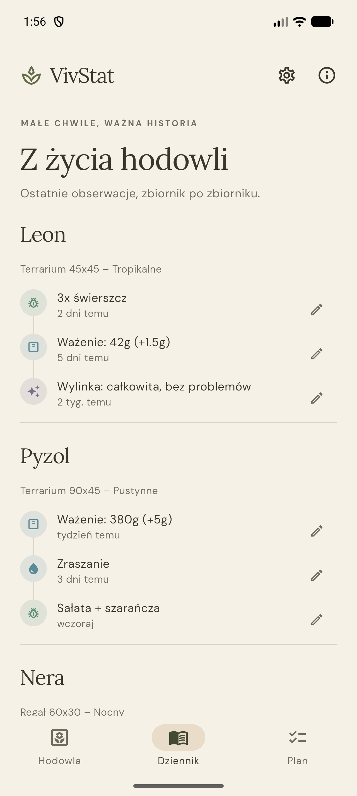

Profil zbiornika i mieszkańców
Gatunek, biom, data nabycia i cele klimatu zapisane przy każdym zwierzęciu.
VivStat pomaga hodowcom gadów, płazów i bezkręgowców prowadzić dziennik zbiornika — karmienia, wagę, klimat i wylinki — i przypomina o tym, co ważne, nawet bez internetu.

01
Dlaczego VivStat
Karmienie raz na tydzień, raz na miesiąc albo raz na pół roku — każdy gatunek ma inny rytm. VivStat ma pilnować tego rytmu za hodowcę, zamiast zostawiać to pamięci albo kartce przy terrarium.
Aplikacja w praktyce
To rzeczywiste ekrany rozwijanego prototypu. Imiona zwierząt i odczyty są danymi przykładowymi.




Co robi VivStat
VivStat jest nadal rozwijany. Poniższe funkcje działają już w prototypie.
Gatunek, biom, data nabycia i cele klimatu zapisane przy każdym zwierzęciu.
Karmienie, waga, klimat, wylinka i notatki dodane w kilka sekund — z możliwością edycji i usunięcia w dowolnym momencie.
Powiadomienie o konkretnej porze, wyliczone z ostatniego karmienia i ustawionego interwału — także dla własnych przypomnień w Planie.
Dane żyją na telefonie bez konta i internetu; jeden eksport pozwala zabrać je na inne urządzenie.
Rozwój
Najpierw sprawdzamy niezawodność przypomnień na prawdziwym telefonie. Termin pierwszego wydania podamy po zakończeniu testów.
Zbiorniki, mieszkańcy, dziennik, przypomnienia i kopia zapasowa działają razem na lokalnej bazie danych.
Sprawdzamy niezawodność powiadomień o karmieniu na fizycznym telefonie — restart, tryb uśpienia, ograniczenia baterii.
Normy klimatu dla popularnych gatunków i przygotowanie do pierwszej publicznej wersji.
FAQ
Jeszcze nie publicznie. Prototyp jest testowany na jednym urządzeniu przed pierwszym wydaniem.
Przede wszystkim dla gadów, płazów i bezkręgowców — węży, jaszczurek, żółwi, ptaszników i innych mieszkańców terrarium.
Nie. Dane są zapisywane lokalnie na urządzeniu i aplikacja działa bez połączenia z siecią.
Na telefonie użytkownika, bez konta i chmury. Kopię zapasową można wyeksportować i zaimportować ręcznie.
Bądź na bieżąco
Obserwuj Apscento albo napisz do nas, jeśli chcesz wiedzieć o rozpoczęciu testów.